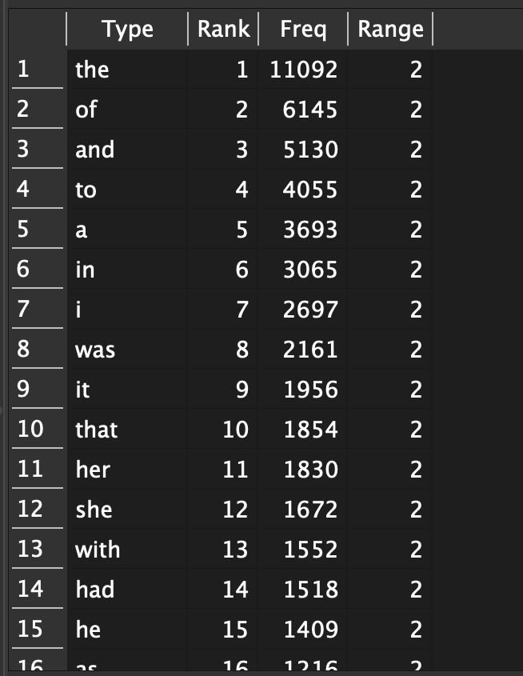
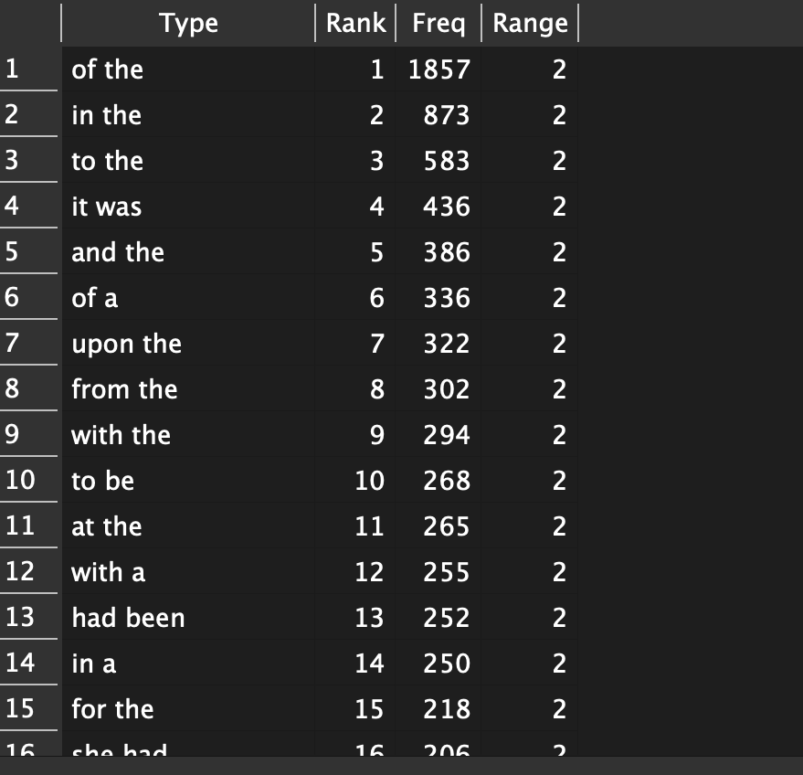
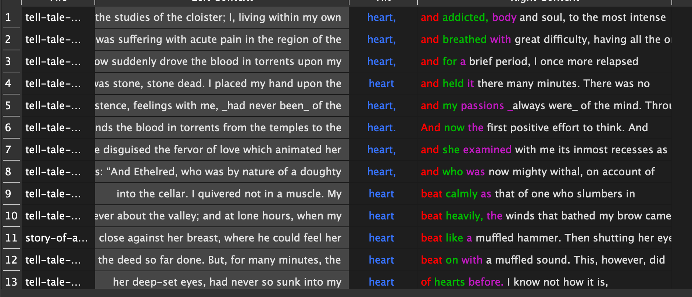

I used AntConc to compare The Tell-Tale Heart and The Story of an Hour. In the N-gram analysis, I found common phrases like “of the,” “in the,” and “it was,” which show that both texts use similar grammatical patterns. In the KWIC analysis, I searched for the word “heart” and noticed it appears frequently in The Tell-Tale Heart, often connected to intense emotions and actions like “beat heavily” or “beat calmly.” This shows how Poe emphasizes tension and obsession. In contrast, the word appears less frequently and with a different meaning in The Story of an Hour, where it relates more to emotion and personal feeling. Overall, the analysis shows how similar language structures can be used to create very different tones.


